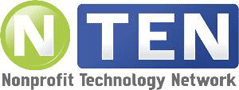
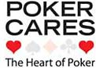

Read about how registering with MissionFish can help you fundraise for
your favorite causes through charity auctions on eBay, The World's Online Marketplace®.

ISoldIt offers a turn key solution to sell
items for fundraisers on eBay through its network of retail locations. Read About how they can make your auction
fundraising a breeze.

VolunteerMatch connects people with
causes that need their help. Read This
Story about how you can use their service to find a volunteer or volunteer opportunity.
Post An Opportunity, or search for a volunteer opportunity
in your area by entering your zip code below.


NTEN: Where the Nonprofit Technology Community Meets The Nonprofit Technology Network

NTEN aspires to a world where all nonprofit organizations use technology skillfully and confidently to meet
community needs and fulfill their missions.
They are the membership organization of nonprofit technology professionals. Their members share the common
goal of helping nonprofits use all aspects of technology more effectively.
They believe that technology allows nonprofits to work with greater social impact. They enable their members
to strategically use technology to make the world a better, just, and equitable place.
NTEN facilitates the exchange of knowledge and information within their community. They connect their
members to each other, provide professional development opportunities, educate the constituency on issues of
technology use in nonprofits, and spearhead groundbreaking research, advocacy, and education on technology
issues affecting the entire community.
READ MORE
Get Your Message Out To The World
.gif) Marketwiredâ„¢ is a social communications leader offering best-in-class news distribution and reporting and
state-of-the-art social media monitoring and analytics. Founded in 1983, Marketwired has always been a
company of firsts- first to deliver news releases automatically to registered recipients and first to
provide a multi-featured desktop client interface. We put the power of influence to work for our
clients—integrating search engine insight and social media intelligence into press release distribution on
one convenient social communications platform.
GET MARKETWIRED!
Marketwiredâ„¢ is a social communications leader offering best-in-class news distribution and reporting and
state-of-the-art social media monitoring and analytics. Founded in 1983, Marketwired has always been a
company of firsts- first to deliver news releases automatically to registered recipients and first to
provide a multi-featured desktop client interface. We put the power of influence to work for our
clients—integrating search engine insight and social media intelligence into press release distribution on
one convenient social communications platform.
GET MARKETWIRED!
Create Your Own Nonprofit Channel On YouTube
Deliver Your Message To The World's Largest Viewing Community!
.jpg) Does your organization
have a compelling story to tell? Do you want to connect with your supporters, volunteers and donors, but
don't have the budget for expensive outreach campaigns? YouTube can help! Video is a powerful way to share
your organization's message, and with a dedicated
"Nonprofit" channel on YouTube
, you will be able to get the word out to the world's largest online video community.
Does your organization
have a compelling story to tell? Do you want to connect with your supporters, volunteers and donors, but
don't have the budget for expensive outreach campaigns? YouTube can help! Video is a powerful way to share
your organization's message, and with a dedicated
"Nonprofit" channel on YouTube
, you will be able to get the word out to the world's largest online video community.
Your Nonprofit Channel Includes
Premium Branding Capabilities
Increased Uploading Capacities
Rotating Videos In The "Promoted Videos" Area
Google Checkout Donate Button
If you are a nonprofit 501(c)(3) organization in the United States, apply today for the YouTube Nonprofit Program!
Everything You Need To Stage A Successful Poker Fundraiser
Poker Cares Has The Expertise For Your Next Poker Event!
 Poker Cares is committed to giving back to the community as part of its business model. They believe that local charities are an important part of every community, so they have put together a network of Poker and Fundraising Experts who care to make a difference. They are committed to helping facilitate the growth of Charity Poker Tournaments that are being held all over the world and raising funds for worthy causes.
See the Fundraisers.com... Poker Event Experts Page


Poker Cares is a network of poker and fundraising experts who care to make a difference in the community. Find out how you can organize a charity poker tournament event for your next fundraiser. See the FundRaisers.com... Poker Resources Page.
Poker Fundraiser For Diabetes
Read about how Pulver Enterprises hosted a successful Texas Hold'em Tournament to benefit Diabetes causes.

Want to find out about Charity Poker Tournaments or let us know about yours? We want to hear from you. Experts wanted! See the Fundraisers.com...
CHARITY POKER BLOG


Get your nonprofit's message out to the world via the world's largest online video community. Sign up today for a dedicated YouTube Nonprofit Channel.
Read about all the valuable technology articles that TechSoup offers to help your organization effectively plan and use technology.


Thanks for visiting FundRaisers.com! Share it with other people for their fundraising campaigns.